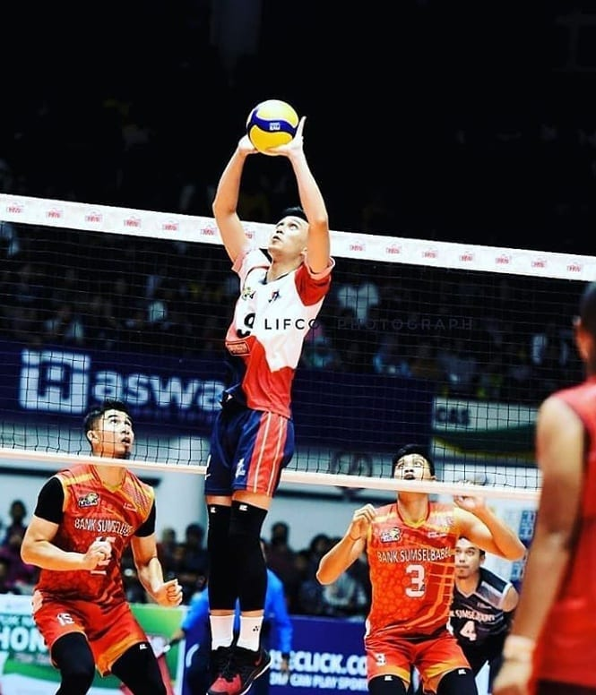

-

Article
Pengertian
Bola voli (bahasa Inggris: volleyball) adalah permainan olahraga yang dimainkan oleh dua grup berlawanan. Masing-masing grup memiliki enam orang pemain. Terdapat pula variasi permainan bola voli pantai yang masing-masing grup hanya memiliki dua orang pemain.
Teknik Dasar
Teknik bola volli ada 5 macam yaitu:
- teknik passing bawah
- teknik passing atas
- teknik smash
- teknik blok/menghadang
1.Teknik servis(service)
Teknik dasar bola voli yang harus dikuasai pertama kali adalah servis (service). Servis adalah penyajian bola voli pertama dalam bermain bola voli. Hal yang perlu diperhatikan dalam servis adalah sikap badan dan pandangan, lambungan bola, dan timing yang tepat saat memukul bola. Servis yang merupakan teknik dasar juga dibedakan menjadi 2 yaitu servis atas dan servis bawah. Servis atas dibedakan lagi menjadi tennis service, floating service, dan cekis.
2.Teknik passing bawah
Yang dimaksud passing dalam bola voli adalah upaya yang dilakukan oleh pemain untuk mengoperkan bola ke taman se tim nya menggunakan teknik tertentu. Teknik passing dalam bola voli sangat penting dalam penyusunan serangan terhadap tim lawan.
3.Teknik passing bawah
Teknik passing bawah juga menjadi teknik yang penting bagi pemain amatir unuk menjadi profesional. karena teknik ini biasanya dilakukan untuk menerima bola service dan smash dari lawan. Passing Bawah dibagi menjadi 2 macam yaitu teknik dasar passing bawah satu tangan dan teknik dasar passing bawah dua tangan
4.teknik smash
Teknik smash atau spike adalah gerakan melompat dan memukul bola voli dengan derajat kemiringan terkecil dan kekuatan terbesar kearah daerah lawan. Teknik Smash adalah teknik yang paling menarik untuk dipelajari dari teknik dasar bola voli, karena teknik ini adalah teknik paling keren dan menjadi momok bagi tim lawan karena teknik dasar smash yang tepat dapat meningkatkan perolehan skor.
5.teknik blok/menghadang
Teknik Blocking adalah satu satunya teknik yang pilih-pilih pemain. Karena teknik blocking hanya digunakan untuk menahan dan mencegah serangan dari lawan seperti smash. Karena itu teknik ini hanya bisa dilakukan pemain yang memiliki badan yang tinggi, namun tidak menutup kemungkinan tinggi badan kita bertambah suatu saat dan mencukupi untuk bisa melakukan teknik blocking, jadi teknik ini juga harus kalian kuasai.
30 Agustus 2020 / No CommentRead More